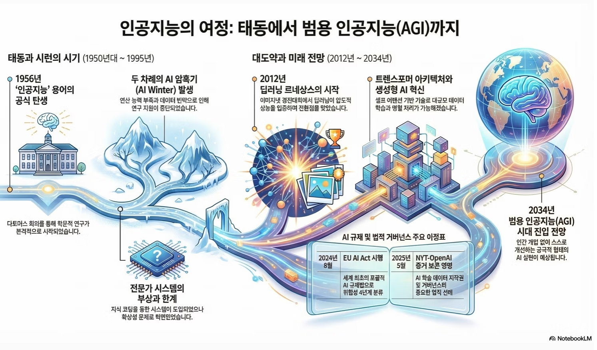

인공지능 패러다임의
구조적 전환
데이터 스스로 가치를 생성하는 '자본 집약적 체계'로의 진화.
산업의 경계를 허무는 AI의 통찰력을 확인하세요.

AI 산업 패러다임 시각화
산업 혁신 보고서의 주요 내용을 시각화한 요약 이미지입니다.
AI (인공지능)
인간의 지능적 행동을 복제하는 포괄적 체계입니다. 데이터 처리에서 판단/실행으로 가치가 이동합니다.
ML (머신러닝)
명시적 프로그래밍 없이 데이터 패턴을 스스로 학습하여 미래 비즈니스를 예측합니다.
DL (딥러닝)
비정형 데이터의 특성을 자동 추출하는 심층 신경망 기술로 비즈니스 병목을 해결합니다.
트랜스포머의 핵심 매커니즘
생성형 AI의 폭발적 성능을 이끄는 셀프 어텐션 원리
Query (쿼리)
현재 찾고자 하는 정보의 주체 또는 질문
Key (키)
데이터베이스 내 각 정보의 인덱스 및 특징
Value (값)
최종적으로 반환될 핵심적인 데이터 내용
AI 역사적 전환점
1956년 다트머스 회의
인공지능(Artificial Intelligence) 용어 최초 공식화. 초창기 기호 기반 AI의 탄생.
1974-1980년 제1차 암흑기
컴퓨팅 능력의 한계와 데이터 부족으로 인한 연구 지원 중단.
1980-1987년 전문가 시스템
If-Then 규칙 기반의 산업화 시도. 하지만 지식 획득의 병목 현상에 부딪힘.
2012년 딥러닝 르네상스
AlexNet의 등장으로 심층 신경망의 가능성 입증. 현대 생성형 AI의 기점.
2034년 AGI 시대 (전망)
범용 인공지능이 도구를 넘어 스스로 목표를 세우고 실행하는 에이전틱 시대로 진화.
의료 헬스케어
80%
MS의 MAI-DxO 시스템은 인간 의사(19.9%)보다 4배 높은 진단 성공률을 기록했습니다.
금융 및 보안
50% ↑
AI 기반 사기 탐지율 향상 및 연간 37억 달러 규모의 피해 차단 효과를 입증했습니다.
미디어 엔터
30% ↓
가상 제작 도입 및 AI 자산 제작을 통해 전체 제작 예산의 30%를 절감하고 있습니다.
최고 의사결정자를 위한 3대 전략
지속 가능한 AI 성장을 위한 로드맵
AI 민주화
전문 인력 확보 경쟁 대신 노코드 플랫폼 도입으로 전 조직원의 AI 활용 능력을 극대화하십시오.
SLM 도입
데이터 주권 확보와 비용 절감을 위해 도메인 특화형 소형 모델(SLM) 인프라를 구축하십시오.
그린 AI
ESG 경영의 일환으로 저전력 연산 및 에너지 효율적인 하드웨어 도입을 통해 탄소 배출을 관리하십시오.